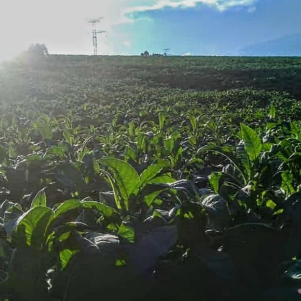
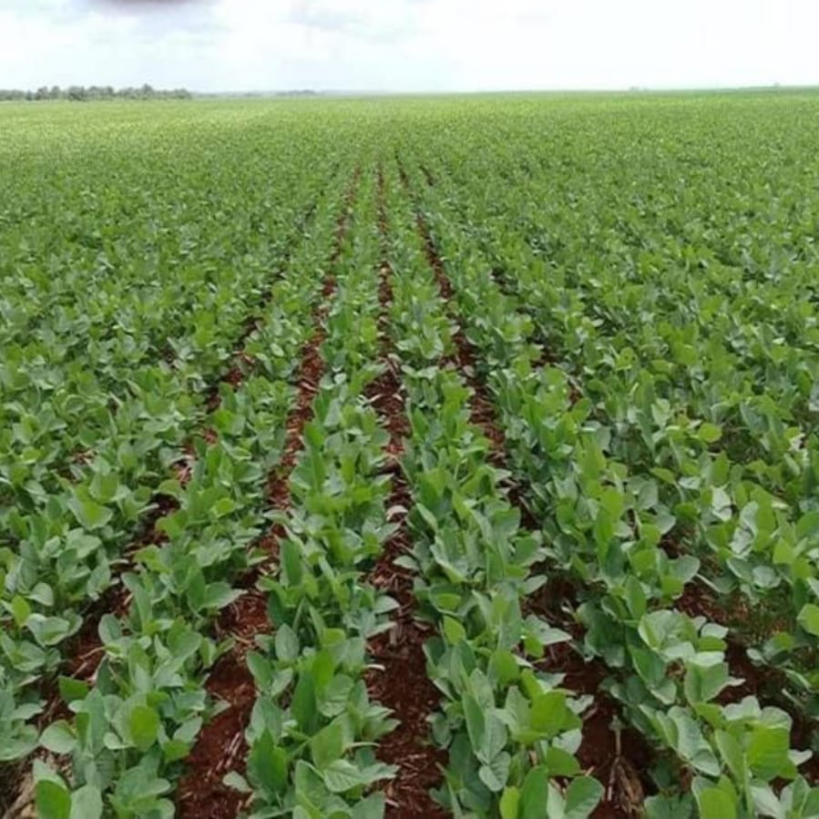

Através da tecnologia é possível adotar práticas que preservam
o meio ambiente, ao utilizar sistemas de irrigação de precisão por exemplo, pode-se evitar
o desperdício de água. Além disso, existem sensores de clima, onde é possível
prever possíveis imprevistos como pragas e doenças. Com isso, consegue-se
diminuir o uso de fertilizantes químicos e pesticidas, diminuindo assim,
a contaminação do solo e da água.


QUALIDADE DOS ALIMENTOS
Além das tecnologias utilizadas durante o processo de plantio e colheita,
onde é possível ter maior controle sobre as condições do alimento,
existem também ferramentas de rastreabilidade, que permitem acompanhar
o percurso do produto desde sua origem até o consumidor, garantindo mais
confiança ao consumi-lo.